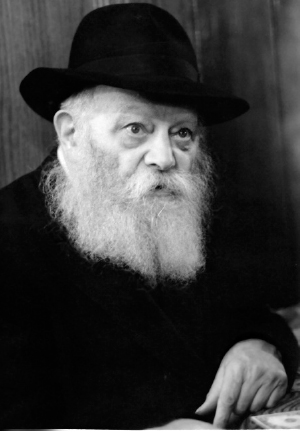

A Lesson in “An Arousal from Above”
This is the first time that Rabbi Tovi Vahava tells this miraculous story that caused considerable excitement about six months ago, when he dozed off near the Shabbos table. Meanwhile, not far from his home, about four hundred young people were waiting for someone to come and give over a Torah class, but no one arrived. However, the Rebbe, the faithful shepherd, did not remain indifferent!
Translated by Michoel Leib Dobry

With Mrs. Zamir’s guidance, Tovi was sent to learn in the local Chabad school, followed by the standard Chabad course of study in yeshiva and k’vutza. “I was honored to publish the seifer ‘Shlichus Chayai’ (My Life’s Mission) about Mrs. Zamir, publicizing her amazing life’s story and her unique connection to the Rebbe,” said Rabbi Vahava.
However, we didn’t come to tell his biography, rather a fascinating “miracle story” that took place last year on the Shabbos before Lag B’Omer and made waves throughout Bat Yam.
For many years the city has had a charismatic Sephardic rav, Rabbi Yisroel Nissim Logasi, known for his captivating pearls of wisdom. Hundreds of young people, currently non-observant, participate each Friday evening in his Torah lecture at the ‘Beit E-l’ Synagogue, while Rabbi Vahava himself gives over the class preceding the lecture. How is it that among all the city’s rabbinical figures, Rabbi Vahava was the one chosen for this task? Read ahead and you’ll find the answer.
MAKING THE TORAH GREAT AND GLORIOUS
“This story took place on the Friday night before Lag B’Omer,” said Rabbi Vahava as he began his narrative. “It had been sixteen years since Rabbi Logasi began his famous Friday night class. They gave it the nickname ‘Oneg Shabbos,’ and Rabbi Logasi himself merited the title of ‘the young people’s rabbi.’ It seems that there is no one in town who doesn’t know Rabbi Logasi. He is a greatly admired personality, with tremendous Torah knowledge and a pleasant disposition. In addition, he knows how to give over powerful words of Torah that speak to a person’s heart. He has been blessed with a unique talent for conveying deep and compelling messages.
“More than four hundred young people, most of whom come from non-religious homes, prefer to come to the synagogue for his Torah classes, instead of engaging in questionable forms of recreation. Over the years, dozens of these youngsters have changed their lifestyles and established kosher Jewish homes.
“I had been acquainted with Rabbi Logasi before. We had met several times and I frequently heard about his appreciation for the Rebbe, Melech HaMoshiach. In his youth he had been close to the Baba Sali, of righteous memory. He spent many years in his presence, where he learned about the special connection between the Baba Sali and the Rebbe. While his drashos included many stories from the Baba Sali and other righteous members of the Abuchatzera family, he also spoke openly and affectionately about the Rebbe MH”M.
“As time passed, the connection between us grew closer, especially after he moved to the street where I live. It wasn’t hard to get close to Rabbi Logasi, as he is a very warm and pleasant man with a congenial smile. I would periodically come to participate in his shiurim, and whenever I arrived, he would invite me to say a few words.
“While my participation was far from regular, only once every few months, I was always surprised by the tremendous honor and respect that Rabbi Logasi had for the Rebbe and Lubavitch. I even heard many times how he would speak about how the Rebbe is Melech HaMoshiach.”
SOMEONE SUDDENLY TUGGED AT MY SLEEVE
“On the Shabbos before Lag B’Omer 5773, we hosted all the members of our family, children and grandchildren. Naturally, when all the family members are gathered together, the Shabbos meal takes longer. Everyone talks and tell stories about their personal experiences. When I saw that it was already past ten o’clock, I decided that I would skip the weekly Friday night class.
“I sat on the couch and started to doze off as balabatim tend to do on a Friday night… Suddenly, I felt a strong tug on the right side of my kapote. I didn’t understand who it could be, as all the grandchildren were gathered around the table. At first, I simply chose to ignore it. But then I again felt someone pulling on the right side of my kapote. I started to turn around, when I was startled by a Heavenly vision. I saw none other than the Rebbe himself standing before me with a serious look on his face. ‘Go to Rabbi Logasi’s ‘Oneg Shabbos’, he told me, ‘and for those who honor Me, I shall honor.’ The Rebbe said these words and then disappeared.
“I jumped from the couch, confused and excited. My legs were shaking. It was clear to me that the Rebbe had just visited my house. Several long minutes passed before I managed to collect my thoughts. This wasn’t the kind of thing that happened every day. This was the first time I had ever seen the Rebbe in such a fashion. I checked to make certain that I wasn’t dreaming or feeling unwell.
“I looked over at the family, most of whom were still sitting at the Shabbos table, and I realized that they were busy talking about their experiences. It immediately became clear to me that I was the only one who had seen this vision. I quickly organized myself and informed my surprised family members that I was going out to Rabbi Logasi’s class – on the Rebbe’s shlichus. They didn’t understand what I was talking about, but I promised that I would explain everything upon my return.
“After briskly walking for a few minutes, I arrived at the synagogue. I was very surprised to see hundreds of young people standing outside, chatting in groups. It was already half past ten, and the class should have started half an hour earlier.
“‘What happened?’ I asked one of the young people.
“It turned out that Rabbi Logasi hadn’t come for some reason, and they were all standing around and waiting for him.
“After another few minutes, a young man came up to me and asked if I would take over for Rabbi Logasi and speak about the weekly Torah portion until he arrived. I agreed to do so. He called everyone inside and I went up to give the class, despite the fact that I hadn’t prepared to speak.
“I felt that G-d placed the right words in my mouth, as everything went extremely well. I spoke for three hours, and they were captivated by the sicha. After telling them about the Rebbe’s instructions on making a parade on the hilula of Rabbi Shimon bar Yochai, we began to talk about the Rebbe as leader of the generation and Moshiach of the generation. I gave the participants an opportunity to ask questions and I patiently responded to each one of them.
“This ‘Oneg Shabbos’ proved to be most successful, and I returned home with a very good feeling. But I was still very confused over how I had been sent to a Torah class, literally by an arousal from Above through the Rebbe himself in all his glory…”
THE TRUTH
BECOMES CLEAR
“As soon as Shabbos was over, I immediately sent a text message to Rabbi Logasi: ‘You have no idea what a special class it was. Get back to me.’
“He called me a few minutes later and I told him what had happened. He was positively stunned.
“‘You gave over a shiur?’ he asked in amazement. He then told me that he had gone out of town for Shabbos and he had arranged before leaving for a Sephardic rabbi to give the lecture in his place. However, it now became clear that he never showed up.
“I told him that I hadn’t come on my own; the Rebbe had sent me. I also told him about the vision I had seen and how the Rebbe had told me in reference to him – ‘for those who honor Me, I shall honor’.
“He was greatly surprised by this chain of events, and he asked if he could get back to me in a few minutes. In the meantime, he called the rav who was supposed to replace him that night. The rav apologized, telling him that he was just about to walk out the door, when he was suddenly overcome with severe abdominal pains. He had no alternative except to remain at home. Since it was Shabbos, he obviously couldn’t call anyone. He had hoped that they would find someone to fill in. ‘If I’m sorry about anything, it’s about the tremendous bittul Torah that took place,’ he told Rabbi Logasi. However, Rabbi Logasi quickly reassured him that there was nothing to be sorry about: The Lubavitcher Rebbe took care of everything. He then proceeded to retell the whole story of what had happened that night.
“Rabbi Logasi contacted his teacher and rav, the kabbalist Rabbi Refael Abuchatzera from Ashdod, and told him about this amazing miracle. His rav’s reply: ‘True. That what’s happened.’ He explained that there had been a great tumult in Heaven over the potential bittul Torah of such magnitude, and it was decided to send the Lubavitcher Rebbe himself, who cares for every Jew in the world, to make certain that the class would go on.
“Rabbi Abuchatzera then told Rabbi Logasi an additional point, that regarding the words ‘for those who honor Me, I shall honor’ – that anyone who gives honor to the Lubavitcher Rebbe, the Rebbe honors him and makes certain that no evil shall befall him.
“The following week, the participants in the weekly Torah lecture were privileged to hear the story in full from Rabbi Logasi himself, as he heaped praise and appreciation upon the leader of the generation who never abandons his flock and cares for every single Jew.”
MORE TORAH CLASSES AND MORE MIRACLES
“The story spread throughout the city of Cholon like wildfire. People became aware of the greatness of the Rebbe, Melech HaMoshiach, whose concern for every Jew continues at every moment and with even greater fortitude.
“Since that week, Rabbi Logasi has asked me to give over a Torah class preceding his lecture. I take the opportunity to discuss the weekly Torah portion from a Chassidic viewpoint, according to the sichos of the Rebbe MH”M. On those occasions when Rabbi Logasi is not in the city, I substitute for him.
“This class has already led to the establishment of additional shiurim. Each Sunday, there is a Tanya class in the ‘Beit E-l’ Synagogue for those seeking a more in-depth study of Chassidic teachings. Many young people have begun to write to the Rebbe via ‘Igros Kodesh’ in request of advice and a bracha. As a result, an abundance of miraculous stories of Divine Providence have been making the rounds. It is now clear to everyone that our generation continues to have a leader.”
Alongside this story, we heard another one just as exciting:
When I asked Rabbi Vahava to explain the significance of his given name, Tovi, we were amazed to discover that the Rebbe himself had been involved in the process:
“On the day that I entered the covenant of Avraham Avinu, my parents gave me the name ‘Yom Tov’. However, I didn’t like the name. When the kids would call me ‘Yom Tov,’ I ignored them and asked if they could call me ‘Tovi.’
“When I reached the age of thirteen, I went to study at the Chabad school in Cholon, run by Rabbi Amos Karniel a”h. He was a Chassid of tremendous stature, who developed our hiskashrus to the Rebbe and the path of Chassidus. He sent a letter to the Rebbe in my name, signing it ‘Yom Tov Vahava’. The Rebbe’s reply stunned everyone. The Rebbe addressed the letter to ‘HaAvreich Tov!’ Rabbi Karniel was in shock. How did the Rebbe know that this was the nickname that I liked? He showed me the letter. This was a prophecy in its truest sense.
“Rabbi Karniel printed his letter with my full name alongside the Rebbe’s reply and publicized the correspondence in the ‘Reshet Oholei Yosef Yitzchak’ newsletter.
“Since then, everyone calls me Tovi. We consulted with Chabad rabbanim, and they said that this apparently represented the Rebbe’s opinion, and the name ‘Tovi’ was the channel through which G-d’s blessings would flow. As a result, they changed my name ‘officially,’ and since my bar mitzvah, my name has been not ‘Yom Tov’, but ‘Tovi’.
“One interesting point: The numerical value of ‘Tovi’ is forty-five, the same as the word ‘Geula’ (Redemption). Thus, I am involved with spreading the announcement of the Redemption and the identity of the Redeemer, and who can say that there’s no connection between the two?”
Nosson Avrohom. "A Lesson in “An Arousal from Above”." Beis Moshiach, no. 901 (November 5, 2013).